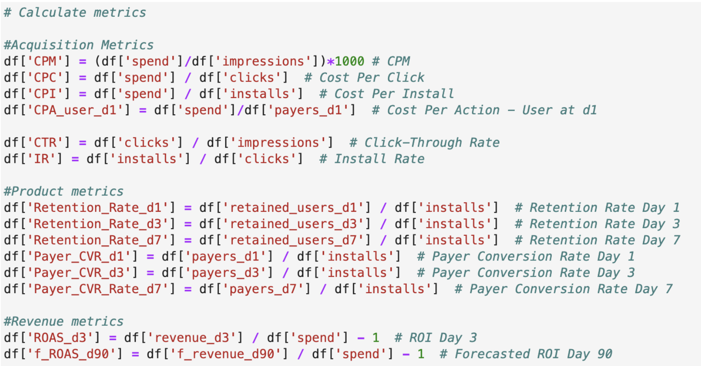
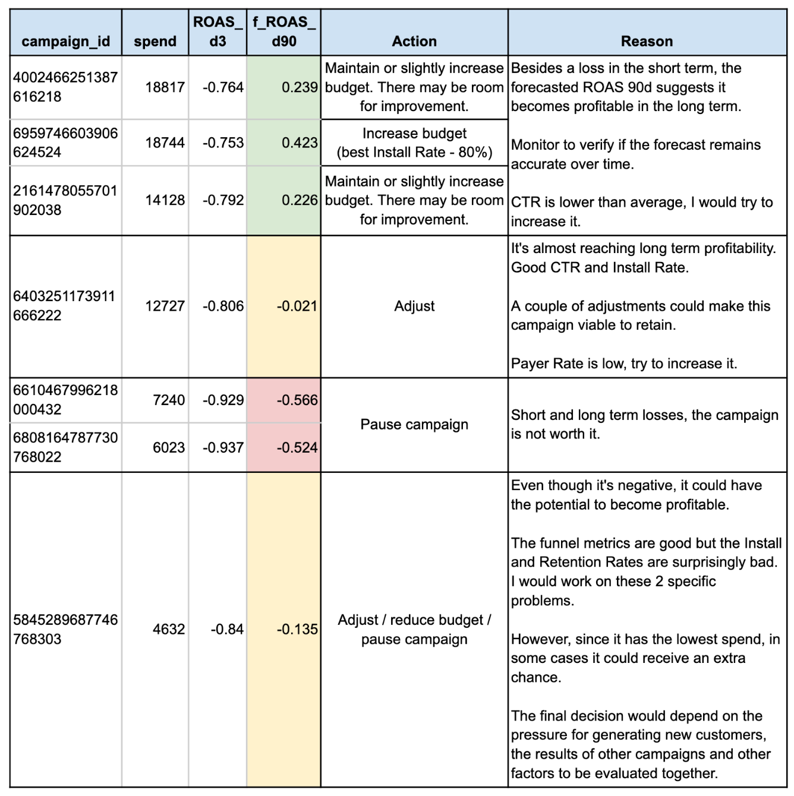
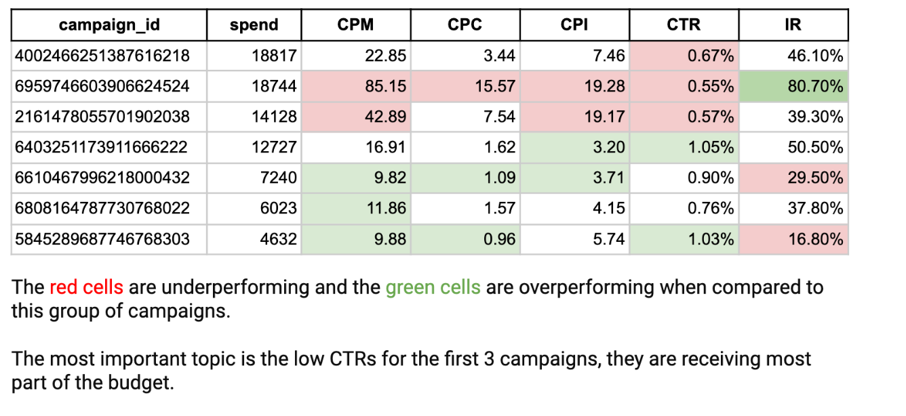

Data Analysis
Case 1 - Campaign Perfomance for a Gaming Company:
In the attached CSVs you’ll find information regarding the performance of our game’s campaigns. Inside of it, you’ll find 7 campaigns that were active between 2024-01-10 and 2024-01-17. The following columns are provided:
Columns
- spend: Amount spent in the campaign
- impressions: Amount of impressions for that specific campaign
- clicks: Amount of clicks for that specific campaign during the period
- installs: Amount of installs for that specific campaign during the period
- f_revenue_d90: expected revenue to be observed after 90 days of installs
- revenue_d3: observed revenue at d3 since install
- retained_users_d1: Amount of users that were active after 1 day since the install
- retained_users_d3: Amount of users that were active after 3 days since the install
- retained_users_d7: Amount of users that were active after 7 days since the install
- payers_d1: Amount of users that paid at least once after 1 day since install
- payers_d3: Amount of users that paid at least once after 3 days since install
- payers_d7: Amount of users that paid at least once after 7 days since install
-
Please compute the necessary metrics to assess the campaign's performance in UA and Product terms.
-
What would be your recommendation for each campaign? Will you increase spend on some? Would you cut spend?
-
Where in the ad funnel (from impression to install in the store) are some of the campaigns over-performing/under-performing?
Solutions
1. Compute metrics: 
2. Recommendations: 
3. Overperforming/underperforming: 
Case 2 - Acquisition Channels, Attribution and Data Quality Analysis:
The Chief Marketing Officer asked you to analyze visitors’ acquisition sources from a specific period (Oct’2021). Your task is to evaluate the performance of specific acquisition sources and - most importantly - give recommendations on the next actions we should take.
The Data Team has already provided you with 3 .csv files you can use for this task:
projects_created.csv
- PROJECT_ID – each business after registration is assigned a unique identifier called PROJECT_ID
- VISITOR_ID – a visitor’s unique id, it’s used to track visitors even before their signup
- PROJECT_REGISTRATION_DATETIME – the time a project was created
- PROJECT_PLATFORM – the platform the project was registered on (you can register a project directly on our website or, alternatively, use one of the platforms you create your websites on, e.g. (WordPress or Shopify)
- PROJECT_COUNTRY_ISO – a two-letter geocode based on a website’s location (ISO 3166-1 alpha-2)
- PROJECT_INDUSTRY – the industry code chosen by users during project registration
- SUBSCRIPTION_CREATED_DATE – the date when the first subscription within a project was created
- FIRST_CONTRACT_VALUE – the value of a subscription (in USD) - for the sake of this task let’s assume that the value doesn’t change during customers’ lifetimes once it’s been created. Also, for the sake of simplicity let’s assume that the current lifespan of a project is equal to 8 months.
homepage_visits.csv
- EVENT_DATETIME – datetime the homepage was visited
- VISITOR_ID – a visitor’s unique id
- ACQUISITION_CHANNEL – how the user entered our website and started the new session
costs.csv
- monthly cost (in USD) generated by each acquisition channel
As an output of your assignment, we would like you to prepare a short report containing your findings that could be potentially shown to internal stakeholders
Case 3 - Paid Marketing Campaigns for an App during November (Black Friday):
Our Paid Marketing team is dedicated to engaging potential users for our app through targeted campaigns across various channels. The objective of these campaigns is to maximize app installations while maintaining a balanced consideration of financial implications. Users who sign up for a subscription within the app count as converted. The revenue generated by subscriptions must be set against the marketing spend. You are provided with a dataset that includes campaign data for five marketing channels and multiple countries for November 2023.
Our paid marketing team is interested in an analysis for two of our focus regions: Germany and the USA. Please consider 3 relevant KPIs of your choice to evaluate the performance in the past November and provide recommendations for the next November.
Solution
- Understand the data
- Use
.info()to understand column dtypes - Use
.head()to understand structure and contents - Use .describe()` to see descriptive statistics
- Look for
nullvalues
- Use
- Transform the data:
- Create a function to aggregate and calculate the metrics
- Analyze the data with multiple dimensions and metrics
Case 4 - Analyze recipes success (numerical and categorical values), applying ANOVA to find statistically significant features:
One of the main parts of our app is the recipe tab that allows users with a subscription to view numerous recipes provided by the recipe team. Users can search for recipes, view preparation details and save recipes as favorites. The recipe team wonders whether there are features that distinguish successful recipes from less successful recipes and asks for your help.
You are provided with an aggregated data set containing data on the recipes viewed by the users. Some of the fields contain text, for example recipe title, description, instructions, etc. related to the recipe.
Solution
-
Understand the data
- Use
.info()to understand column dtypes - Use
.head()to understand structure and contents - Use .describe()` to see descriptive statistics
- Look for
nullvalues
- Use
-
Transform the data:
- Process/reshape data to facilitate analysis
-
Analyze the data:
-
For numeric data:
- Scatter plots
- Histogram
- Correlation
- PPScore
-
For categorical data:
- Combine tags in similar groups
- Calculate aggregated metrics
- Boxplots
- Apply ANOVA to understand what features are statistically significant
-